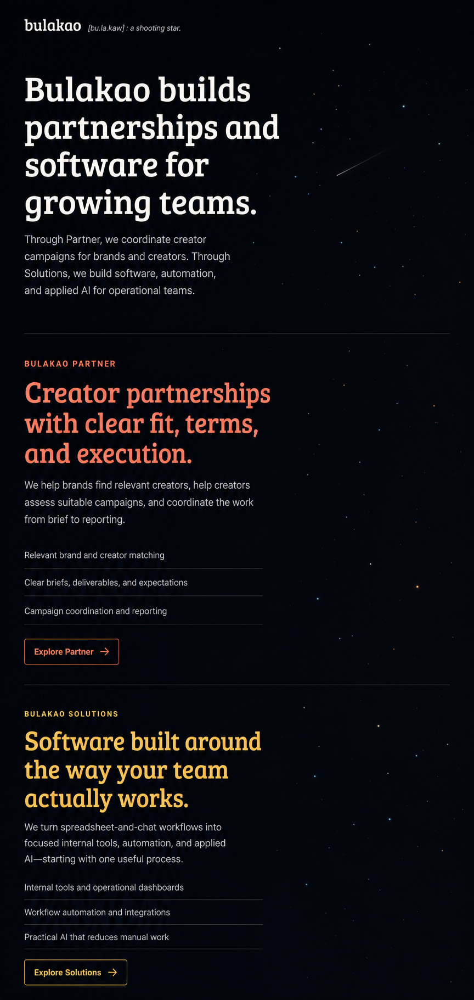
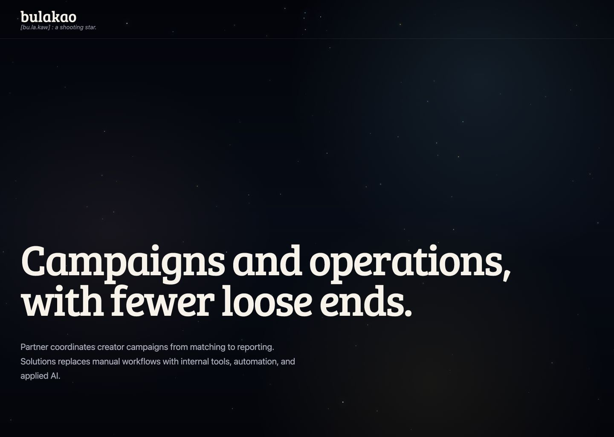
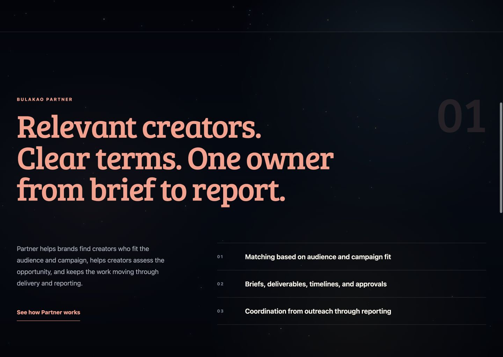
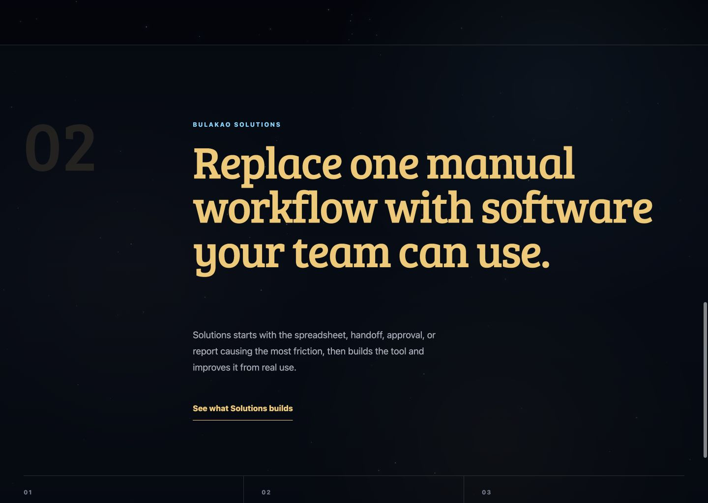

Bulakao gateway comparison
Intentional revision: the selected mock established the typography, palette, three-section structure, and single star field. The implementation replaces its uniform left alignment with the user-requested asymmetric editorial grid.



